Public reference gallery
These cards show tightly cropped reference circles from the archived spell galleries. Full screenshots and surrounding page content are not included.
These cards show tightly cropped reference circles from the archived spell galleries. Full screenshots and surrounding page content are not included.
Canonical recipe index
Search 29 profiled central sigils, 11 elemental mixtures, unordered pairs of 40 signs, and both support modes.
Visual organization examples for a category focused on observation, appearance, and light reduction.
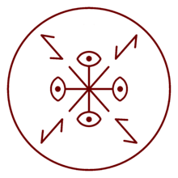
Gathering ShadowsVisionReference circle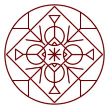
Light-Reducing SpellVisionReference circleComposition examples that combine several signals around one circle.
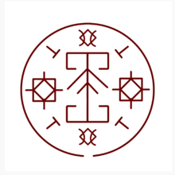
Beast RepellentMixedReference circle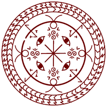
Cloak SpellMixedReference circle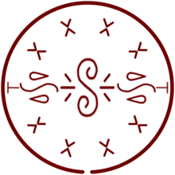
Floating DropsMixedReference circle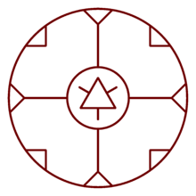
Warmth-Retention SealMixedReference circle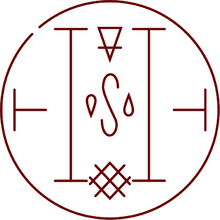
Frozen PathMixedReference circleMore specific examples showing how the gallery keeps a consistent grid.
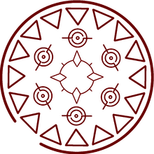
Cookpot LidNicheReference circle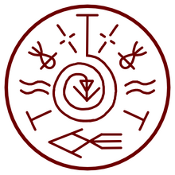
Fish GuidanceNicheReference circle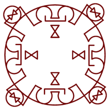
Mirror SpellNicheReference circle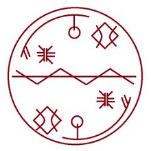
Tracking SpellNicheReference circle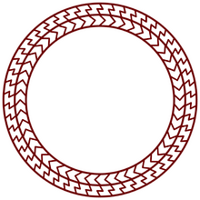
Windowway SpellNicheReference circle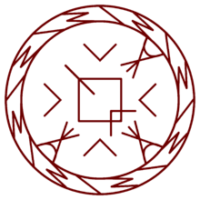
Enchanted Doorknob SealNicheReference circle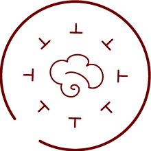
Smoke CloudNicheReference circle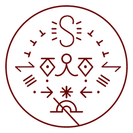
Beldaruit's Illusion CloakNicheReference circle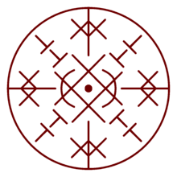
Advanced BeastwardingNicheReference circle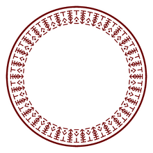
Amplification ScrollNicheReference circle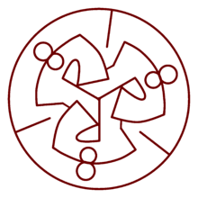
Garment-Glimpse GlassesNicheReference circle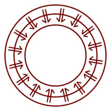
Handheld WindowwayNicheReference circle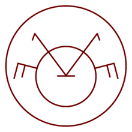
Owlcat ProjectionNicheReference circle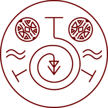
Pouch GuidanceNicheReference circleCropped historical reference circles, including spoiler-sensitive forbidden spells.
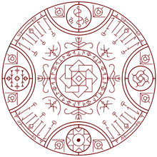
PetrificationAncient / ForbiddenReference circleHistorical examples compatible with the simplified public gallery.
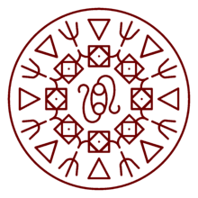
Ancient Light BeaconAncient / Non-ForbiddenReference circleGenerated, simulator-safe reconstructions selected from visible community spell ideas and high-value recipe gaps.
Twenty-nine profiled central sigils define the recipe material, form, or governing action. Every profiled sigil available in the editor participates in the validated matrix.
Forty signs modify supply, state, form, motion, target, scope, relation, or unresolved behavior. Size, position, connection, and rotation affect the result.
No link keeps the paper on the desk. Shoe support fixes a small paper below the sole and applies stricter physical limits.
The mixture system is limited to Fire, Water, Earth, and Wind. The index includes 29 single sigils plus 11 balanced mixture signatures; Light and other non-base sigils preserve their existing primary behavior.
Balanced pairs infer steam, heated earth, fire vortex, driven mist, mud, or dust. These labels are simulator interpretations, not manga-confirmed mixtures.
Balanced triples infer moving mud, pressurized steam, heated mud, or ash. The balanced four-element combination is an experimental unstable elemental mixture.
Equal counts are balanced. Repeating a base sigil at runtime makes that element dominant, lowers balance, and raises intensity while keeping the same material class; arbitrary repetitions are not exhaustively indexed.
Search 65,601 records: 65,600 regular matrix recipes plus the complete opening petrification ritual. Search aliases such as mud/boue and steam/vapeur, or filter a mixture by either component.
Documented rules have direct research support. Inferred and experimental labels identify combinations completed logically by the simulator.